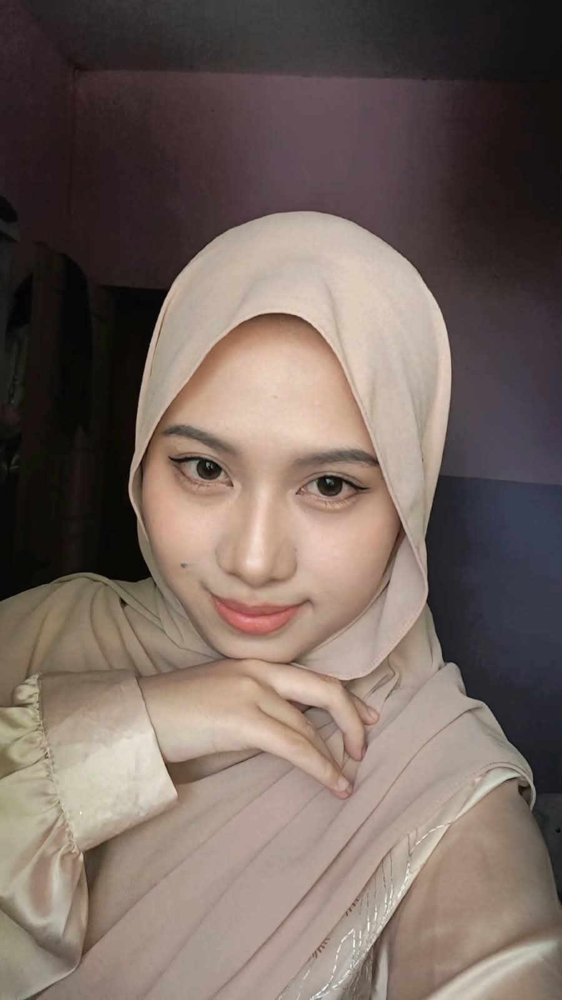

Praktik Pengalaman Lapangan
Dokumentasi, analisis, dan refleksi pelaksanaan praktik mengajar di SMAN 2 Mataram sebagai bagian dari pengembangan kompetensi profesional calon guru Pendidikan Pancasila.
Praktik Pembelajaran Mandiri
Praktik Pembelajaran Mandiri Siklus 1 sampai 4.
Problem Based Learning dan Project Based Learning
PPKn
Profil Praktikan
Informasi identitas dan konteks pelaksanaan Praktik Pengalaman Lapangan.

Hafadzatun Adzmi, S.Pd. Calon Guru Pendidikan PancasilaEnam Komponen E-Portfolio
Rancangan Pembelajaran
Analisis rancangan/perencanaan pembelajaran yang digunakan dalam praktik mengajar.
Materi Pembelajaran
Analisis materi yang telah disusun, diterapkan, dan disesuaikan dengan kebutuhan peserta didik.
Media Pembelajaran
Analisis penggunaan PPT interaktif, Video turorial, LKPD, Canva, Google sites, Team picker whell.
Video Praktik Mengajar
Dokumentasi serta analisis pelaksanaan praktik mengajar.
Kegiatan Nonmengajar
Dokumentasi dan analisis kegiatan di lingkungan sekolah di luar kegiatan pembelajaran.
Instrumen Penilaian
Instrumen asesmen yang dirancang serta analisis penggunaannya.
Analisis Rancangan Pembelajaran
Analisis produk rancangan/perencanaan pembelajaran yang digunakan untuk melaksanakan praktik mengajar.
🎯 Gambaran Rancangan
Rancangan pembelajaran disusun berdasarkan capaian pembelajaran Pendidikan Pancasila dengan memperhatikan karakteristik peserta didik, tujuan pembelajaran, aktivitas pembelajaran, asesmen, serta penggunaan media pembelajaran yang relevan.
📌 Komponen Rancangan
- Identitas Diri
- Capaian Pembelajaran
- Tujuan pembelajaran
- Materi pembelajaran
- Model pembelajaran
- Metode pembelajaran
- Media dan sumber belajar
- Langkah kegiatan pembelajaran
- Asesmen pembelajaran
- Refleksi pembelajaran
🔎 Analisis Kesesuaian
Tuliskan analisis kesesuaian antara rancangan pembelajaran dengan kebutuhan peserta didik, capaian pembelajaran, karakteristik materi, serta kondisi nyata di kelas.
📄 File Rancangan Pembelajaran
Rancangan Pembelajaran Siklus 1
Unduh rancangan pembelajaran siklus 1
Rancangan Pembelajaran Siklus 2
Unduh rancangan pembelajaran siklus 2Rancangan Pembelajaran Siklus 3
Unduh rancangan pembelajaran siklus 3Rancangan Pembelajaran Siklus 4
Unduh rancangan pembelajaran siklus 4💡 Kelebihan dan Perbaikan
Kelebihan
- Pembelajaran memiliki alur yang terstruktur.
- Menggunakan aktivitas kolaboratif.
- Memanfaatkan media pembelajaran digital.
- Memberikan ruang bagi peserta didik untuk berdiskusi dan menghasilkan produk.
Perbaikan
- Menyesuaikan alokasi waktu dengan kondisi nyata.
- Memperjelas instruksi kegiatan proyek.
- Meningkatkan strategi manajemen kelas.
- Menyiapkan alternatif kegiatan apabila waktu pembelajaran terbatas.
Analisis Materi Pembelajaran
Analisis materi pembelajaran yang telah disusun dan diterapkan dalam praktik mengajar.
📚 Materi yang Diterapkan
Tuliskan judul materi, bab, subbab, konsep utama, serta alasan pemilihan materi dalam praktik mengajar.
Pendidikan Pancasila PPKn Kelas XI Pembelajaran Kontekstual
🎯 Tujuan Penyusunan Materi
Materi disusun agar peserta didik dapat memahami konsep secara bertahap, menghubungkan materi dengan kehidupan nyata, serta menerapkan nilai-nilai Pendidikan Pancasila dalam konteks kehidupan sehari-hari.
🧠 Karakteristik Materi
- Konseptual
- Kontekstual
- Mendorong penalaran kritis
- Dapat dikaitkan dengan permasalahan nyata
- Mendukung diskusi dan proyek
📄 File Materi
Materi Pembelajaran
Masukkan file materi, PDF, PPT, atau dokumen pendukung lainnya.
contoh: Materi_Pancasila_XI.pptx🔎 Analisis Penerapan Materi
Jelaskan bagaimana materi diterapkan selama proses pembelajaran, respons peserta didik terhadap materi, bagian yang mudah dipahami, bagian yang masih sulit, serta strategi yang digunakan untuk membantu peserta didik.
Analisis Media Pembelajaran
Analisis media yang digunakan untuk mendukung keterlibatan dan pemahaman peserta didik.
PPT Interaktif
Digunakan untuk menyajikan materi secara visual serta memberikan pertanyaan pemantik.
Visual Interaktif
Video Pembelajaran
Digunakan untuk memberikan stimulus dan menghubungkan materi dengan situasi nyata.
Audio Visual
Google Sites
Digunakan sebagai media produk proyek untuk menyajikan hasil analisis kelompok.
Digital Project
Canva
Digunakan untuk menghasilkan produk visual seperti poster dan QR Code.
LKPD
Membantu peserta didik mengikuti langkah analisis dan menyelesaikan tugas secara sistematis.
Picker Wheel
Digunakan untuk membantu pembagian kelompok secara lebih menarik dan terstruktur.
🔎 Analisis Efektivitas Media
Jelaskan kelebihan dan kekurangan media pembelajaran yang digunakan serta pengaruhnya terhadap keterlibatan, motivasi, dan pemahaman peserta didik.
📁 Dokumentasi Media
Tempat Dokumentasi Media
Anda dapat memasukkan screenshot, gambar, atau tautan media pembelajaran di bagian ini.
EDIT: media-pembelajaran/Analisis Video Praktik Mengajar
Dokumentasi dan analisis pelaksanaan praktik mengajar secara langsung di kelas.
🎥 Identitas Video
Judul video: Praktik Mengajar Pendidikan Pancasila
Satuan pendidikan: SMAN 2 Mataram
Kelas: XI Sains
✅ Hal yang Berhasil
- Pembukaan pembelajaran dapat dilaksanakan secara terstruktur.
- Guru menggunakan PPT interaktif.
- Peserta didik diberi kesempatan menjawab pertanyaan.
- Peserta didik terlibat dalam diskusi kelompok.
- Kegiatan refleksi tetap dilaksanakan.
⚠️ Hal yang Perlu Diperbaiki
- Pengelolaan waktu.
- Manajemen kelas.
- Pengendalian keributan.
- Pemberian instruksi proyek.
- Pengelolaan siswa yang mudah terdistraksi.
🎬 Analisis Video
Tuliskan analisis berdasarkan video, misalnya: keterampilan membuka pembelajaran, penyampaian materi, interaksi guru dan peserta didik, penggunaan media, pengelolaan kelas, pemberian penguatan, asesmen, pengelolaan waktu, serta penutupan pembelajaran.
Analisis Kegiatan Nonmengajar
Dokumentasi keterlibatan dalam kegiatan sekolah di luar aktivitas pembelajaran di kelas.
🏫 Kegiatan Nonmengajar
Tuliskan kegiatan nonmengajar yang telah dilakukan selama PPL, seperti observasi lingkungan sekolah, kegiatan kesiswaan, BK, UKS, kegiatan administrasi, kegiatan sekolah, atau aktivitas pendukung lainnya.
Observasi Lingkungan Sekolah
Mengamati berbagai fasilitas dan lingkungan pendukung kegiatan pendidikan di sekolah.
Observasi Kesiswaan
Mengamati pengelolaan kedisiplinan, keterlibatan orang tua, dan kegiatan peserta didik.
Observasi Bimbingan dan Konseling
Mendapatkan gambaran mengenai dukungan BK terhadap perkembangan peserta didik.
Kegiatan Sekolah Lainnya
Tambahkan kegiatan nonmengajar lainnya.
🔎 Analisis Manfaat Kegiatan
Jelaskan pengalaman dan kompetensi yang diperoleh dari kegiatan nonmengajar serta keterkaitannya dengan peran guru secara profesional.
📸 Dokumentasi
Galeri Kegiatan Nonmengajar
Masukkan foto dokumentasi kegiatan pada folder yang telah disediakan.
EDIT: dokumentasi-nonmengajar/Instrumen Penilaian
Dokumentasi instrumen asesmen yang dirancang beserta analisis penggunaannya.
Asesmen Diagnostik
Digunakan untuk mengetahui kondisi awal pengetahuan dan karakteristik peserta didik.
Asesmen Formatif
Digunakan selama proses pembelajaran untuk memantau perkembangan pemahaman peserta didik.
Asesmen Produk
Digunakan untuk menilai kualitas produk yang dihasilkan dalam kegiatan proyek.
📋 Instrumen Penilaian yang Dirancang
| No. | Instrumen | Tujuan | Bentuk | Waktu |
|---|---|---|---|---|
| 1 | Asesmen Diagnostik | Mengetahui kemampuan awal | Tes / Non-Tes | Awal |
| 2 | Observasi | Mengamati keterlibatan siswa | Lembar observasi | Proses |
| 3 | Penilaian Produk | Menilai hasil proyek | Rubrik | Akhir |
| 4 | Refleksi | Mengetahui pengalaman belajar | Pertanyaan reflektif | Akhir |
🔎 Analisis Instrumen
Jelaskan kesesuaian instrumen dengan tujuan pembelajaran, keterukuran indikator, kemudahan penggunaan, serta bagaimana hasil asesmen digunakan untuk memperbaiki proses pembelajaran.
📎 File Instrumen
Instrumen dan Rubrik Penilaian
Masukkan dokumen instrumen penilaian, kisi-kisi, rubrik, lembar observasi, atau dokumen asesmen lainnya.
contoh: Instrumen_Penilaian.docxRefleksi Pengalaman PPL
Refleksi terhadap pelaksanaan pembelajaran, kendala, respons peserta didik, umpan balik Guru Pamong, dan rencana perbaikan.
✅ Aktivitas yang Berhasil
Kegiatan Pembukaan
Mengecek kesiapan siswa, doa, kehadiran, silent of moment, tujuan pembelajaran, dan apersepsi menggunakan PPT interaktif.
Kegiatan Inti
Penyampaian materi melalui tanya jawab, pembentukan kelompok, analisis kasus, perencanaan proyek, Google Sites, poster, dan persiapan presentasi.
Kegiatan Penutup
Refleksi, tanya jawab, penyimpulan bersama, penyampaian materi berikutnya, dan penutupan.
⏰ Kendala Waktu
- Keterlambatan siswa memasuki kelas.
- Pengecekan kehadiran yang membutuhkan waktu.
- Pengambilan dan pemasangan LCD.
- Waktu pembelajaran terpotong oleh jadwal MBG.
👥 Kendala Manajemen Kelas
- Suasana kelas terkadang ramai.
- Siswa menyoraki teman ketika terjadi kesalahan.
- Beberapa siswa sulit diarahkan.
- Terdapat siswa yang sering keluar masuk kelas.
😊 Respons dan Keterlibatan Peserta Didik
Sebagian besar peserta didik menunjukkan kesiapan, antusiasme, dan keterlibatan dalam pembelajaran. Penggunaan emoji perasaan membantu guru memperoleh gambaran awal mengenai kondisi emosional peserta didik. Kegiatan proyek juga memberikan ruang bagi peserta didik untuk bekerja sama, bertukar pikiran, menganalisis kasus, dan menghasilkan produk.
Terdapat pula peserta didik yang membutuhkan pendampingan lebih lanjut dalam memahami instruksi dan menentukan kasus. Guru memberikan bimbingan secara langsung serta membantu kelompok tersebut menentukan kasus dan memahami langkah pengerjaan proyek.
💬 Umpan Balik Guru Pamong
Guru Pamong memberikan ruang kepada praktikan untuk mengatur gaya belajar dan strategi pembelajaran sesuai kondisi peserta didik dengan tetap memperhatikan ketercapaian pembelajaran serta inovasi pembelajaran.
🔄 Rencana Perbaikan Rancangan Pembelajaran
- Menyesuaikan alokasi waktu dengan kondisi nyata dan jadwal sekolah.
- Memadatkan kegiatan pembukaan tanpa menghilangkan komponen penting.
- Memperjelas aturan dan instruksi proyek.
- Menyediakan contoh kasus sebagai alternatif apabila peserta didik mengalami kebingungan.
- Meningkatkan strategi manajemen kelas.
- Mempertahankan penggunaan PPT interaktif.
- Mempertahankan kegiatan refleksi dan asesmen formatif.
- Menyiapkan alternatif kegiatan apabila waktu pembelajaran mengalami perubahan.
🌱 Refleksi Profesional
Pengalaman praktik mengajar memberikan pemahaman bahwa keberhasilan pembelajaran tidak hanya ditentukan oleh kualitas rancangan yang dibuat, tetapi juga oleh kemampuan guru dalam menyesuaikan rancangan dengan kondisi nyata di kelas. Pengalaman menghadapi keterbatasan waktu, keberagaman karakter peserta didik, dan dinamika kelas menjadi bagian penting dalam proses pengembangan kompetensi saya sebagai calon guru.